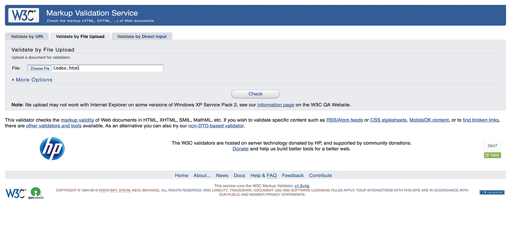
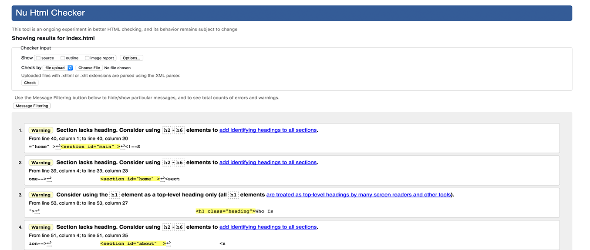
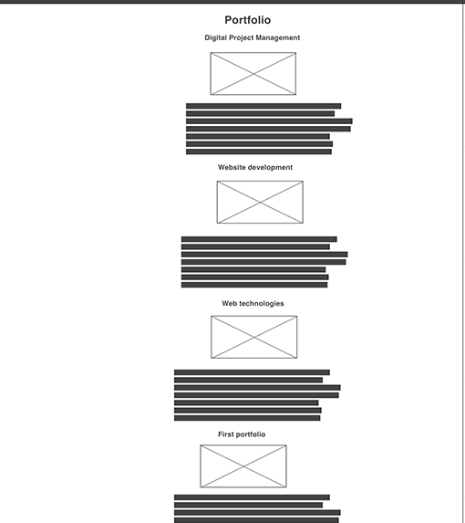

There are two factors that helps to develop the website and those factors are known as performance and optimisation. The performance of the website is based on the loading time and its computability with different browsers and the experiences of the user. This website portfolio was developed with the help of HTML, CSS and JavaScript. It I the light language that keeps the website light and does not require fast load time. The pictures and graphics and its uses was focused to a minimum and this way, the size does not exceed about the website and this quickly load the website. (Siotos, 2013)
The website was formed in term the navigation could be easier for strong level of user experience. The font and colour were also light in colour to ignore the vision based challenges. The website portfolio was tested for different errors that might create with the incompatibility of browser. The testing of the website was done on Safari, Google Chrome and Mozilla and different tools and the performance related challenges were resolved accordingly. The website portfolio was optimised with the help of proper keywords. (Devine websites, 2017)
  Validation of code: When there is coding done by the programmers, they leave the open tags and incomplete navigation tabs. This generates the challenges while searching and focus on scanning the website for particular information and appropriate keywords. This way, it can rank the website successfully. There is a validation of code on the validator tool called as W3C that resolves all the errors. This helps to understand there are no links that are broken and there could have index in every page for the appropriate keywords. (thegrowthstory.in, 2017)
Optimization of page: There is a relevance of keywords to every page that were looked for the page curriculum vitae such as IT consultant candidate in London who was BTec graduate were looked and implemented with the help of different tags such as title, description and alt tags. This helps to index the URL of the page that could help in the search engines. Different search engines such as Google, Yahoo and Bing can read the website text along with the codes. The use of alt tag help to deal with the images while scanning the images that can read the keywords within the alt tag.
The content of the website was proofread for grammar and spelling challenges. The appropriated keywords were found in every page with the Google keyword planner that were involved into the Title. Alt and description of every page. To develop the links, social media links were posted on the website. This works as the backlinks that are important to increase the page and the authority of the domain.
Social media also increases the website fuel and it involves the best content that can be exchanged successfully. There were fresh and best articles and blogs written for grammar and uploaded on the blog of the website. The articles are developed with keywords and it helps to develop the search engines and ranking. Different blogs were uploaded to develop the content and this increases the website keywords. (Freewayprojects.com, 2016)